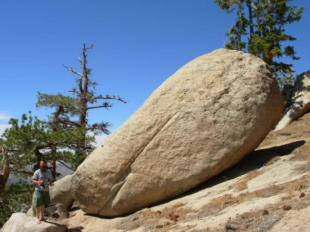
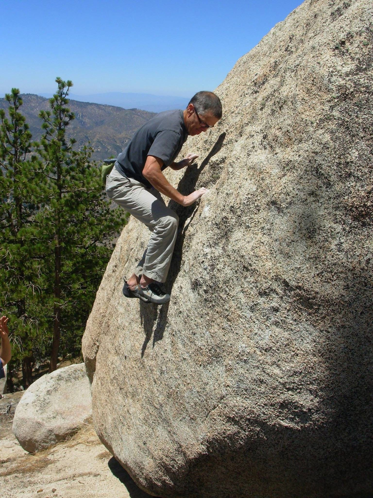
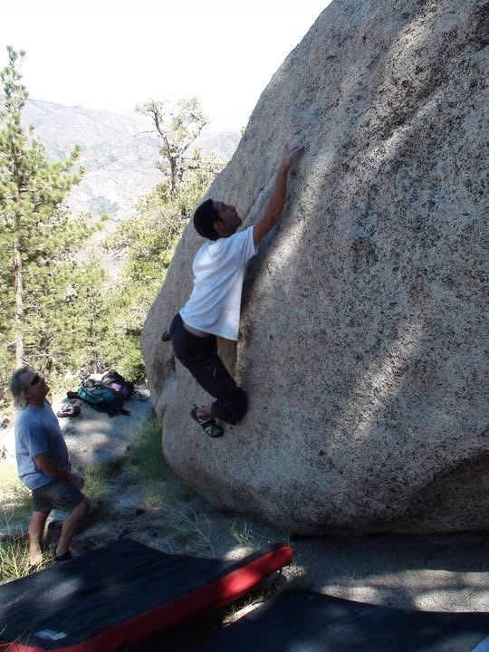
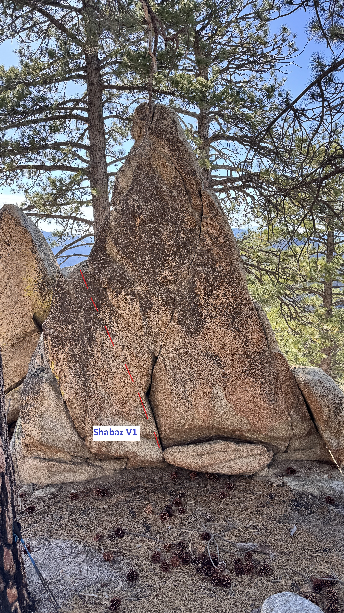
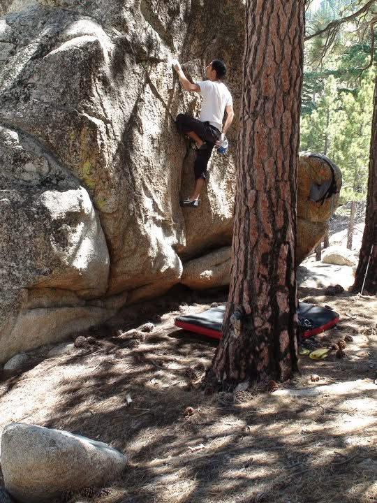
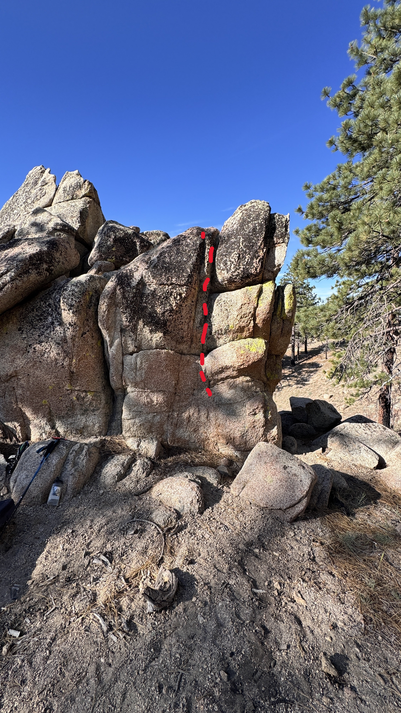

Winston Peak
Winston peak is this great peak next to Cloudburst Summit with a nice little trail to provide access to great views and fantastic boulders. The climbing here is just great, super easy to access, and just a vibe. A great deal of climbing and developement here was done by Steve Powell, Tony Yeary, Jeff Sewell and others in the 90s and early 2000s. The rock quality of the area varies but is unique compared to the rest of this belt of rock from Tunnel Crag to Horse Flats. As you hike further towards Winston Ridge, the rock gets sharper and more slick which begs the question if anyone is down to develop Winston Ridge!
The following boulders on this guide are pretty sick and have a super easy approach to them. If anything on this site seemed too inaccessible for you and your friends, these bad boys are definitely here for you to easily enjoy.
Obviously, this is a huge work in progress so please contribute and climb out here.
Lastly, thank you Tony and Steve for the photos!
The Stash
The Stash was named by Steve Powell and basically is the area of boulders that are located on the east and south sides of Winston Peak. The following boulders and problems are a mix of stuff climbed recently and stuff climbed in the 90s and early 2000s.
Obsession Boulder
A great egg with a long crack running through it's side
Object of My Desire V3
FA: Steve Powell 2000s
Take the crack right then up.

Steve cranking on Object of My Desire


Shabaz Boulder
This boulder is massive and pointy. It has an obvious crack that runs from the bottom to the top right and left with small holds scattered. This is definitely a gem of the Angeles.
Shabaz V1
FA: Bailey 1990s
Follow left crack up.

Bailey working Shabaz

Unnamed V1
FA: Unknown
Start on slopers and move up through narrow crack

Unnamed V0
FA: Unknown
Good holds all the way up the corner

Pic cred to Tony, Jeff, and Steve.